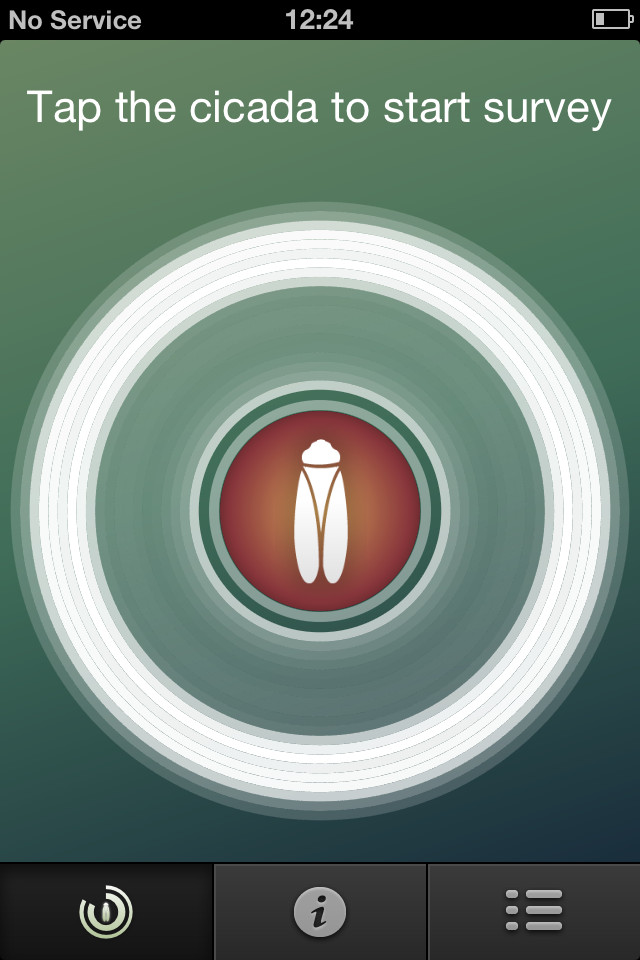

We've tried to make the app as simple as possible to use, but please read these instructions to get the most out of it:
Head to the detector page. You will see a sonogram, which analyses the frequency of the sound coming through your phone's microphone. Try speaking into the microphone or singing at different pitches, and see how it changes. If you are in a very noisy environment the sonogram may go completely white. When searching for the cicada, you need to keep background noise to a minimum.
If you click on the centre of the sonogram, you will start a survey. This will record 30 seconds of sound from the phone's microphone and analyse it to detect the presence of a cicada. When performing the survey avoid talking and moving to maximise the sensitivity of the detector. For best results, hold you phone upside down, so that the microphone points upwards.
At the end of the survey you will see a survey report that tells you what you have found. If an insect call similar to the cicada is detected, you will be prompted to upload the recording so that we can analyse it further.
Head to the reports page to see all the surveys that you have carried out. Whenever you start the app it will try to upload any pending reports to our server so that we can see the results.
Should you find the cicada, you will see a strong white band in the outer circles on your detector page. Those represent the high frequencies of the cicada's song. The cicada logo in the centre of the page will also light up, like in the screenshot below:

If you see this, tap the cicada to start a survey in order to capture a recording. The strength of the white bands will depend on how far away the cicada is.
Q I'm sure I can hear something, but no insect has been detected. Why is that?
A This app does not (yet) detect all species of insects. We're working on this, and will update the app over the summer as we collect more smartphone recordings from the New Forest.
Q Do you store any of my data?
A We keep anonymised data about the time and location of a survey, and occasionally a sound recording of that survey. Head to the "Project and Technology" page for more details on this.
Q How big is the uploaded sound recording?
A Each recording that is uploaded is about 3MB in size. Files are only uploaded when the app is active, so you can wait until you have Wi-Fi access before uploading if you wish.
If you have any other questions, check out the forum pages on the project website or contact us directly.